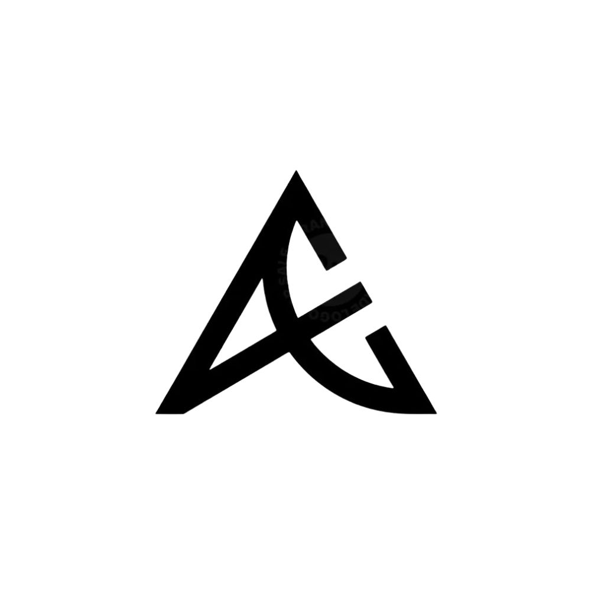

AI Assistant Module — Week 3
Ask about my portfolio
ASK.ERICH is a custom-built chat interface on top of ElevenLabs Conversational AI, grounded in a fixed knowledge base of my projects, stack, and background. It won't invent an answer — if something's outside what it knows, it'll say so.

TABLE: ask_erich_session ASK.ERICH — Portfolio AssistantStart a session below to begin.
Conversations are processed by ElevenLabs, a third-party AI voice/text platform.